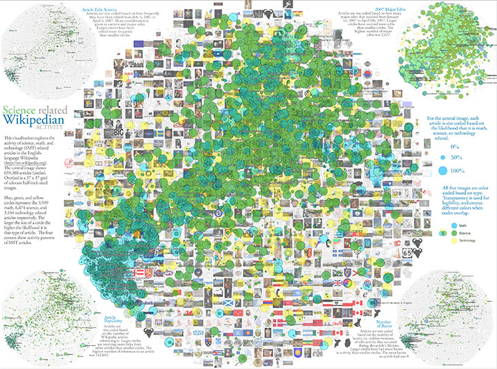

X.9 Exploring the Relationships between a Map of Altruism and a Map of Science

III.8 Science-Related Wikipedian Activity

Click the image above to view Map.
André Skupin’s research interests focus on geographic visualization, cartographic generalization, data mining, and information visualization. This map was computed from more than 22,000 abstracts submitted to the annual meetings of the Association of American Geographers during a ten-year period from 1993 to 2002. The methodology is centered around the representation of each document as an n-dimensional vector of terms. These vectors are used to construct a neural network model of the geographic knowledge domain using a Self-Organizing Map (SOM). The neural network model is then transformed into two types of information: (1) a landscape in which elevation indicates the degree to which a single, focused topic is addressed; and (2) multilevel text labels associated with regions in the visualization. The final rendering was executed in standard geographic information systems (GIS) software.
Authors: André Skupin
References
André Skupin’s research interests focus on geographic visualization, cartographic generalization, data mining, and information visualization. This map was computed from more than 22,000 abstracts submitted to the annual meetings of the Association of American Geographers during a ten-year period from 1993 to 2002. The methodology is centered around the representation of each document as an n-dimensional vector of terms. These vectors are used to construct a neural network model of the geographic knowledge domain using a Self-Organizing Map (SOM). The neural network model is then transformed into two types of information: (1) a landscape in which elevation indicates the degree to which a single, focused topic is addressed; and (2) multilevel text labels associated with regions in the visualization. The final rendering was executed in standard geographic information systems (GIS) software.
Authors: André Skupin
References
- Skupin, André. 2004. “The World of Geography: Visualizing a Knowledge Domain with Cartographic Means.” PNAS 101 (Suppl. 1): 5274-5278.
- Skupin, André. 2005. In Terms of Geography. Courtesy of André Skupin, San Diego State University, San Diego, CA. In “1st Iteration (2005): The Power of Maps,” Places & Spaces: Mapping Science, edited by Katy Börner and Deborah MacPherson. http://scimaps.org.
Click the image above to view Map.
Developed by research programmers Bruce W. Herr II and Todd M. Holloway, graphic designer Elisha F. Hardy, and information scientists Kevin W. Boyack and Katy Börner, this map shows the structure and dynamics of the English Wikipedia based on 659,388 articles and their editing activity. The similarity of each article-article pair was calculated as the number of shared links to other articles. The resulting similarity matrix was read into VxOrd to generate the base map layout. An invisible 37 x 37 half-inch grid was drawn underneath the network and filled with relevant images from key articles. Overlaid are 3,599 math, 6,474 science, and 3,164 technology articles. They are color-coded in blue, green, and yellow, respectively, with all other articles appearing in grey. Exactly 8,181 articles are in one category, 2,348 in two, and 73 in all three categories. The four corners show smaller versions of the map with articles size-coded according to article edit activity (top left), number of major edits from January 1st, 2007, to April 6th, 2007 (top right), number of bursts in edit activity (bottom right), and the number of times other articles link to an article (bottom left). These visualizations serve to highlight current trends and predict future editing activity and growth in Wikipedia articles related to science, technology, and mathematics.
Authors: Bruce W. Herr II, Todd M. Holloway, Elisha F. Hardy, Kevin W. Boyack, and Katy Börner
References
Developed by research programmers Bruce W. Herr II and Todd M. Holloway, graphic designer Elisha F. Hardy, and information scientists Kevin W. Boyack and Katy Börner, this map shows the structure and dynamics of the English Wikipedia based on 659,388 articles and their editing activity. The similarity of each article-article pair was calculated as the number of shared links to other articles. The resulting similarity matrix was read into VxOrd to generate the base map layout. An invisible 37 x 37 half-inch grid was drawn underneath the network and filled with relevant images from key articles. Overlaid are 3,599 math, 6,474 science, and 3,164 technology articles. They are color-coded in blue, green, and yellow, respectively, with all other articles appearing in grey. Exactly 8,181 articles are in one category, 2,348 in two, and 73 in all three categories. The four corners show smaller versions of the map with articles size-coded according to article edit activity (top left), number of major edits from January 1st, 2007, to April 6th, 2007 (top right), number of bursts in edit activity (bottom right), and the number of times other articles link to an article (bottom left). These visualizations serve to highlight current trends and predict future editing activity and growth in Wikipedia articles related to science, technology, and mathematics.
Authors: Bruce W. Herr II, Todd M. Holloway, Elisha F. Hardy, Kevin W. Boyack, and Katy Börner
References
- Holloway, Todd, Miran Božičević, and Katy Börner. 2007. “Analyzing and Visualizing the Semantic Converage of Wikipedia and Its Authors.” Complexity 12 (3): 30-40.
- Herr II, Bruce W., Todd Holloway, Elisha F. Hardy, Kevin W. Boyack, and Katy Börner. 2007. Science-Related Wikipedian Activity. Courtesy of Indiana University. In “3rd Iteration (2007): The Power of Forecasts,” Places & Spaces: Mapping Science, edited by Katy Börner and Julie M. Davis. http://scimaps.org.